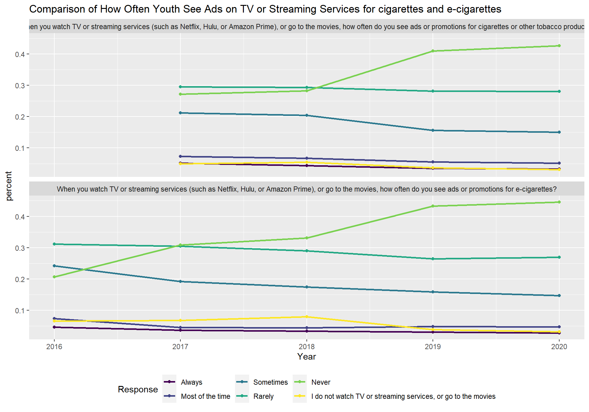
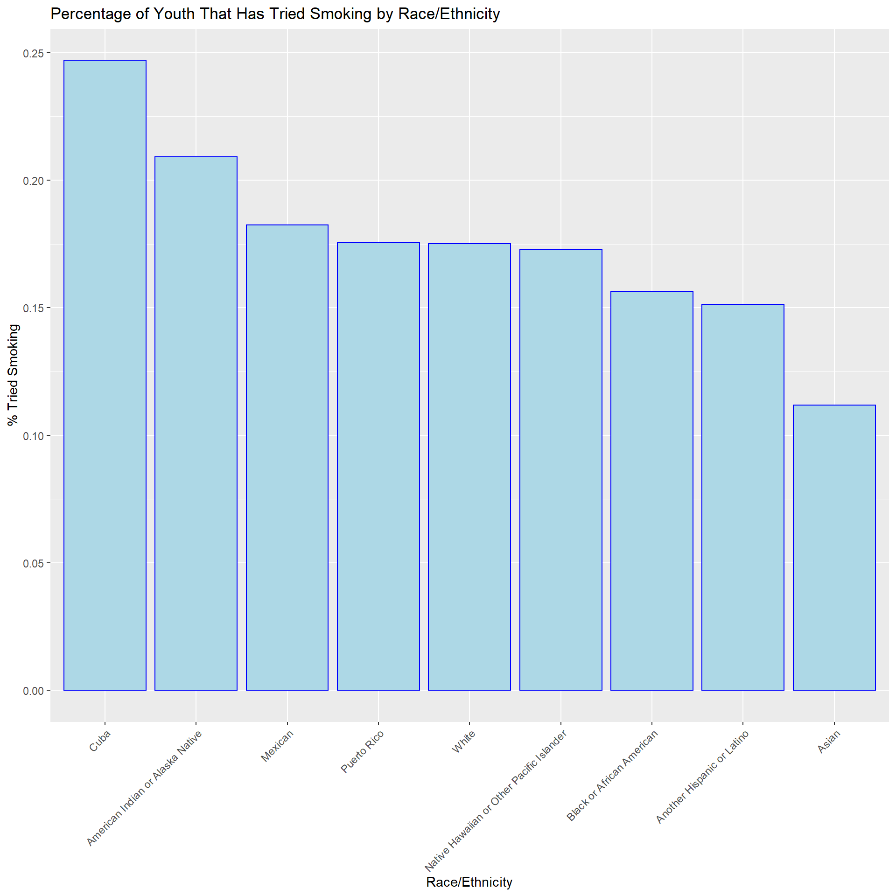
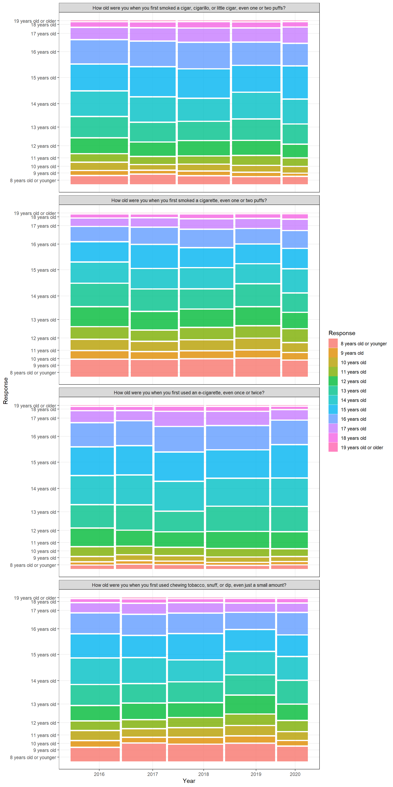

Chapter 5 Results
5.1 Advertisement
It is not surprising that tobacco advertisements appears in everyday lives. One possible reason that youth start using tobacco products are because of ads

E-cigarettes are becoming popular in recent years as they have some fruity/sweet flavor comparing to traditional tobacco. We could clearly discover a trend that ads for e-cigarettes are increasing on the Internet and stores but not on TV or streaming services. The possible reason for the difference is that there are stricter control on what would be on TV than on the Internet and stores since the latter are the primary source where people gets tobacco products.
Looking at the TV or streaming services plot, we can also relate the decreasing of tobacco/e-cigarettes ads to the legislation that legal age for tobacco products were raised from 18 to 21 years old in 2019.
Another perspective we want to focus on is the relationship between ages, grades, and how often those youth see ads about tobacco products’ ads. As we all know, people’s resistance to some attractive things will also increase as people grow. Thus, if a teenager sees too much promotion about cigarettes when he was even younger, it will be no surprise that this teenager started smoking at a very young age. So, we made those plots that describe the relationship between the age or grade and how often they see promotions.
The first graph here is ages vs. how often they see promotions. Let us first analyze traditional tobacco products and cigarettes, which is the upper part of this graph. Based on those graphs, we can clearly see that around 37 percent of 9 years old children always saw promotions for tobacco products through the internet. This number is terrifying because if a child has been affected by those tobacco promotions since nine years old, it will be very common for this child to become a smoking youth person. For the store, it looks like there are just constant promotions hung in those stores, and no matter who entered the store will be affected by it. This also can be shown through the plot. Based on the plot, for all ages’ people, around 15 to 30 percent of total popularity always saw promotions for tobacco products. Similarly, TV and streaming services here still affect the least amount of people. Those numbers are also decreasing, which can be interpreted as people who work for TV or streaming service are taking this seriously and trying to control the ads about tobacco products.
Then, we switch our view to e-cigarettes, which are the lower part of the graph. Based on the graph, we can see that, no matter through which way, a large number of nine years old child always see the promotion of e-cigarettes. The promotion for e-cigarettes reached its peak in 2017 and there are around 30 to 40 percent of nine-year-old children always see those ads from both the internet, convenience stores, and TV. Although this number decreased a lot in 2020, those e-cigarettes’ promotions still affected a lot of young teenagers and children.
Now, let us look at the relationship between grades and promotions of tobacco products. The interesting thing here is that a group of people is labeled as ungraded, and around 40 percent of people in this group always see promotions for both cigarettes and e-cigarettes. As we all know, the grade should be related to ages, which means ungraded teenagers may have dropped their school or their family can not afford the education. It is obvious that a child or teenager without enough education will always be affected by smoking ads, since they may spend too much time on the internet, TV shows instead of school. Those children and teenagers are easier to smoke when they become youth adult.
5.2 Race

As we can see by the breakdown by race/ethnicity above, almost 1 in every 4 of the youth that identify as Cuban have tried smoking. The percentage of youth identifying as Cuban who have tried smoking is over twice as much as the percentage of youth who identify as Asian. The percentage of the youth who identify as Hispanic or Latino and have tried smoking is about 17%, which is greater than most other race/ethnicities other than American Indian or Alaska Native. Approxmately 1 in 5 of the youth who identity as American Indian or Alaska Native have tried smoking.
5.3 Distribution of age for youth smoking people whose first try of tobacco products
Another perspective we want to study is when youth-smoking people first try tobacco products. We use the question “How old were you when you first tobacco products” from our data set to do this analysis. We have four kinds of tobacco products: cigars, cigarettes, e-cigarettes, and chewing tobacco. We built a mosaic plot for each product from 2016 to 2020 and tried to find the most common age at which youth people are more likely to start smoking. Here is our graphs.
 Based on the mosaic plots above, most youths started using tobacco products during high school age (14 to 17). For over five years, over fifty percent of people tried their first tobacco products at this age. This result is reasonable considering that most people first feel stressed at high school. People at this age always need to face the study stress from school and peers, the physiological and psychological stress that came from growing up, and the more and more obvious individualized differences.
However, it is surprising that some youth had a fair amount of contribution on starting using traditional cigarettes and chewing tobacco, snuff, or dip at eight years old or younger. This result is surprising not only because the behavior of purchasing tobacco products at this age is illegal but also because people at this age should not be stressed enough to use those products to relieve themselves. Considering that youth cannot purchase tobacco products legally by themselves, this result reminds us that focusing on the source of tobacco products is very important. Since that eight-year-old or younger children should have no excuses for using tobacco products, we believe that curiosity here played an important role. Child’s natural curiosity about everything makes them interested in these common stress relief products. In this scenario, if the people they live with have the habit of using some tobacco products, it will be very easy for those children to steal one or two and start trying those tobacco products. In this condition, although the probability is very low, some children will still start suffering from smoking addiction because of this behavior.
One thing that needs to be mentioned is that even the government enacted the stricter law in 2018, the pattern did not change significantly. Very few youth people starting at 19 years old or older, the most minor group among all groups, means that there are still a lot of stores that are willing to sell those tobacco products illegally.
Based on those analyses, we can conclude several vital points. Firstly, people should pay more attention to high school students’ mental health conditions and help them find better ways to face their difficulties and relieve their stress. Secondly, people who live with children should try to avoid smoking in front of those children since children tend to imitate other people’s behaviors. Besides, adults should keep their staff, especially something like tobacco and alcohol, safely and avoid children getting in touch with those things.
5.4 Tendency to Use Tobacco products
The final question we want to study is the smoking tendency in youth people. For this question, we only used data set in 2020, which we think is the closest data set to today and gives us more meaningful guidance than others. Here is our plot.
The plot responses to questions about tendency of smoking in 2020.
Most of responses are Definitely not, since it made our plot long to read, we filter out 5439 that answered Definitely not in all 5 question.
Here are reference to the questions in the plot above, this is to avoid confusion.
| Question Num | Actual Question |
|---|---|
| Q1 | Do you think that you will try a cigarette soon? |
| Q2 | Do you think that you will smoke a cigarette in the next year? |
| Q3 | If one of your best friends were to offer you a cigarette, would you smoke it? |
| Q4 | Have you ever been curious about smoking a cigarette? |
| Q5 | Have you ever been curious about using an e-cigarette? |
Based on the plot, we can find that answers to the first three questions are similar. This result means most people who do not have a plan of smoking in the next year also do not want to try tobacco products. In addition, those people who also do not want to try tobacco products will not change their idea even when their best friends start trying to smoke. However, things changed dramatically on the fourth and fifth questions. Obviously, no matter what answers those people gave for the first three questions, most people changed their answers in the fourth and fifth questions. By looking at the plot detaily, we can see that a fair amount of people who answered ‘definitely not’ in the previous three questions answered ‘probably yes’ for the fourth and fifth questions, which means even they determined not to smoke, they are still curious about tobacco products. Things became more serious when we asked questions about e-cigarettes. Compared to the people who answered “definitely not” in the first three questions, only 25 percent of people left and still chose “definitely not”. Besides, no matter what attitude those participants held for traditional tobacco, most of them changed their attitudes dramatically when things came to the e-cigarettes. Combined with our daily observation, it looks like e-cigarettes are not only a tobacco product; they are becoming decorations or a symbol of youth. However, unlike other decorations, e-cigarettes are addictive and harmful for users.
Overall, through this plot, we can find that youth know the danger of smoking, and many of them can control their curiosities about tobacco products. However, e-cigarettes are becoming a more and more severe problem. As trending flavors of e-cigarette, the plot shows that many young people are interested in such a new product (the height for Probably yes and Definitely yes are much larger than other questions). It is clear that youth are trying to separate e-cigarettes and traditional tobacco products since many advertisements emphasize that e-cigarettes are substitutes for traditional cigarettes, how good it is, and how it can help you stop suffering from smoking addiction. There is at least one similarity between e-cigarettes and cigarettes: They are both addictive and harmful.